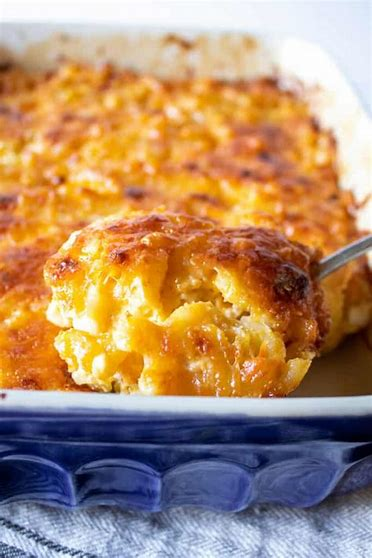

Southern Style Baked Mac and Cheese

Description
Southern-style baked mac and cheese is a beloved classic that embodies
comfort and indulgence in every creamy, cheesy bite. This dish is a
quintessential Southern comfort food, often gracing tables at family
gatherings, potlucks, and holiday feasts across the American South.
Ingredients
- 1 16 oz packet of elbow macaroni
- 1/2 cup unsalted butter
- 1/2 cup all purpose flour
- 1 1/2 cups whole milk
- 2 1/2 cup half and half
- 2 cups shredded cheddar cheese
- 1 1/2 cup shredded Colby Jack cheese
- 2 cup gruyere
- 1/2 cup smoked gouda
- 1/2 tbsp salt
- 1 tsp ground black pepper
- 2 tsp paprika
- 1/2 tsp nutmeg
- 2 tsp italian seasoning
- A dash of tumeric
- 6 cloves garlic
Steps
- Preheat oven to 325 F and grease a 9x13" baking dish. Set aside
- In a large saucepan, melt butter with fresh garlic (minced). Simmer on
low heat until garlic is fragrant. Turn off heat and let garlic
infuse for at least 20 min.
- Shred all the cheeses and mix together in a bowl. Set aside
- Bring a large pot of generously salted water to a boil. Add
elbow macaroni and cook 1 minute less than al dente according to
the package instructions (This is to make sure that we don't end
up with mushy mac and cheese after baking). Strain macaroni and
add in a pat of butter to prevent sticking.
- Strain the garlic from butter and set aside. Put butter back in
saucepan
- Over medium heat, sprinkle in flour and whisk to combine until
mixture looks like very wet sand. Cook for ~1 min while
constantly whisking. When the roux looks golden brown, slowly
pour in about 2 cups of the half and half, whisking constantly
until smooth. Slowly pour in the remaining half and half + the
whole milk , while whisking constantly until smooth.
- Continue to heat over medium , whisking constantly still, until
thickened to a very thick consistency. Add in spices as well as
the reserved garlic.
- Remove from heat and stir in 3 cups of the cheese until smooth.
Add in cheese in small batches to prevent clumnps
- Combine cheese sauce with the cooked macaroni pasta. Pour half
of the macaroni mixture into the greased baking pan and layer
with cheese. Pour the rest of the pasta mixture and top with
remaining cheese.
- Bake for 15-20 min until the top cheese layer looks bubbly
and light golden brown.
- Let cool down for at least 15 min, and serve warm!